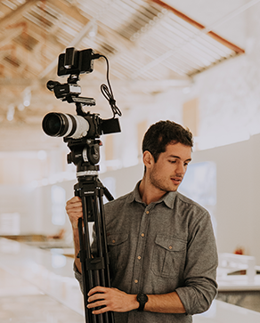

Ao longo de mais de 15 anos, os nossos estudantes criaram dezenas de filmes, fotografias, aplicações web e multimédia e exposições. Destacamos apenas alguns dos muitos projetos interessantes criados em CAM ao longo da nossa história.
PROJETOS EM DESTAQUE
Workshop de Som
Captação e edição sonora em ambiente de estúdio.


Exposição Multimédia
Seleção de trabalhos práticos do semestre.
OS NOSSOS GRADUADOS

Eliabe Campos
CEO Overall Studio / Fotógrafo e Videógrafo“O curso de CAM não me preparou apenas para entrar no mercado de trabalho “tradicional”, com horário fixo e a rotina de esperar pelo fim do mês para receber o salário. Pelo contrário, deu-me ferramentas e uma forma de pensar que me ajudaram a seguir um caminho próprio. Quando olho para trás, percebo que o CAM não foi só uma formação mas sim o ponto de partida para tudo o que construí até agora.”

Francisco Miranda
CEO Yank CREATIVE MEDIA / PRODUTOR E REALIZADOR“No curso de CAM descobri a minha paixão pelo som e imagem, adquirindo as bases essenciais para crescer e afirmar-me na área do audiovisual, criando posteriormente a minha própria produtora de fotografia e vídeo focada em trabalho publicitário.”

Monique Moreira
UI Designer“A formação em CAM deu-me uma base importante de cultura visual, comunicação e pensamento crítico sobre a imagem. Apesar de o meu percurso profissional se ter direcionado para UI Design, essas referências continuam a influenciar a forma como observo, analiso e crio soluções digitais no meu trabalho.”